FARLENS BRAND FILM #000 · WORKING TEST
Scene 1 Motion Blocking
「世界は動き始めている」0〜10秒。採用済み5 Framesの意味とテンポだけを検証するStage 3プレビューです。
NON-CANONICAL · NO AUDIO · FIXED CAMERA
PLAY FIRST
10秒 Motion Blocking
SCENE 1 → 2 · READ-ONLY REFERENCE
0〜23秒 接続Review
0〜10秒は不変のScene 1、10〜23秒はPR #191の採用済みScene 2です。10.0〜11.1秒だけReview専用のLayer別接続を使い、両Masterと正式尺は変更していません。
FRAME / BEAT MAP
意味の進行
- Frame 1 · Beat 1静かな世界。微弱な呼吸のみ。
- Frame 2 · Beat 2一つの小さな変化が生まれる。
- Frame 3 · Beat 3異なる現象へ時差で伝播する。
- Frame 4→5 · Beat 4現象同士が接続し、世界全体へ変化が広がる。
- Frame 5 · Beat 5新しい意味を足さず、Scene 2が始められる状態へ安定する。
TEMPORAL EVIDENCE
Transition Contact Sheet

全体Contact Sheet

0.5秒刻み
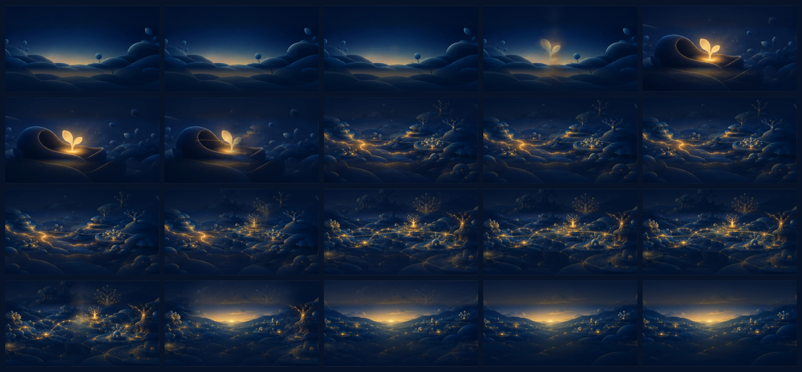
Scene 1→2｜接続境界
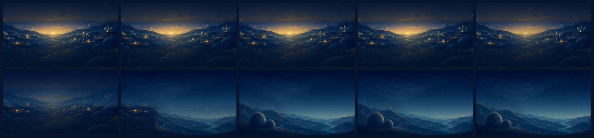
Scene 1→2｜1.1秒接続拡大
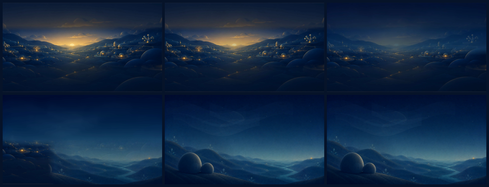
Scene 1→2｜修正前 / 修正後
上段がWorkflow 31077899888のCompass確認版、下段がLayer別Envelopeによる現行版です。
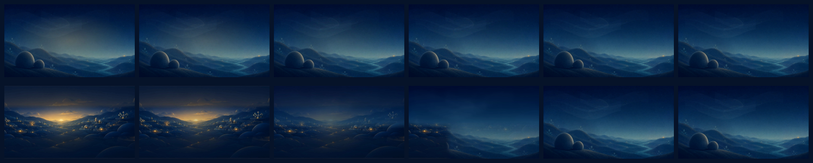
Scene 1→2｜Layer Envelope
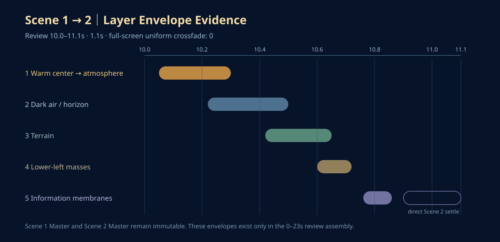
0〜23秒｜全体呼吸
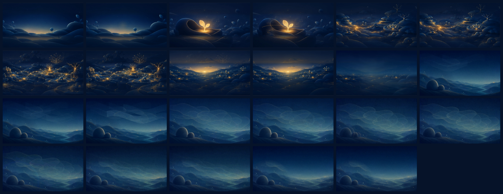
CONTINUITY REVIEW
Frame 1→2｜発生
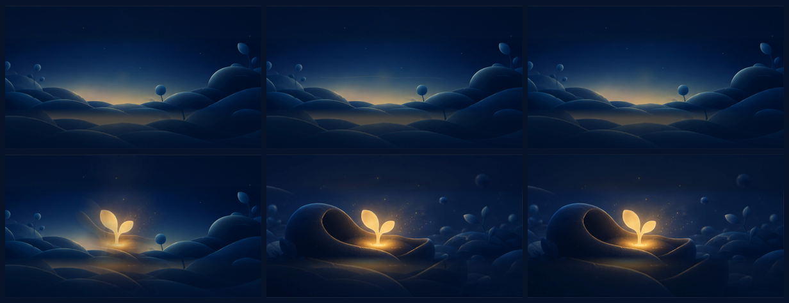
Frame 2→3｜伝播
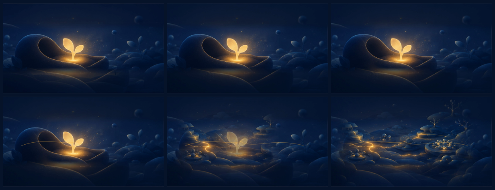
Frame 2→3｜修正前 / 修正後
左がCompass再レビュー時点（commit 97a10ca）、右が奥行き伝播へ局所修正した現行版です。
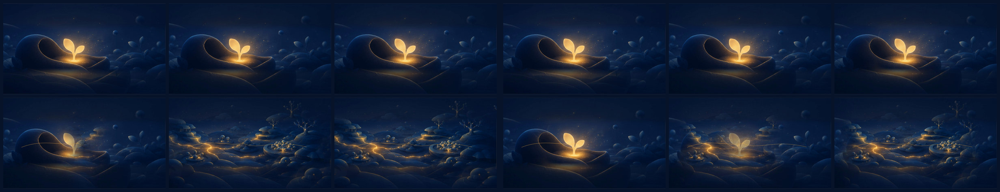
Frame 3→4｜相互作用
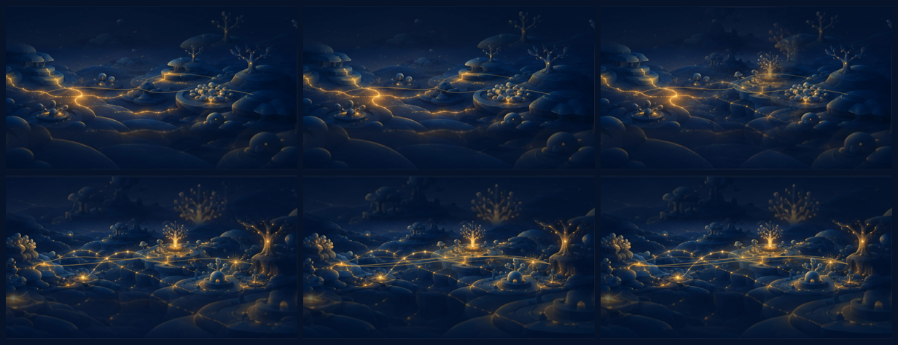
Frame 4→5｜世界規模への展開
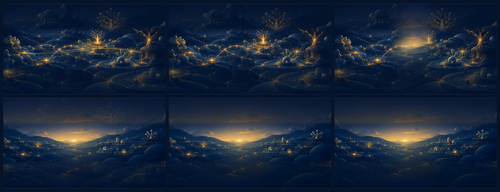
SOURCE OF TRUTH
採用済みStatic Sequence

SHA-25697bfd90afc8e6ceaa6d6bf3e8a26d78b6cf9b9d506240af5fd84fb5b9d290c59